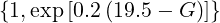
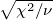
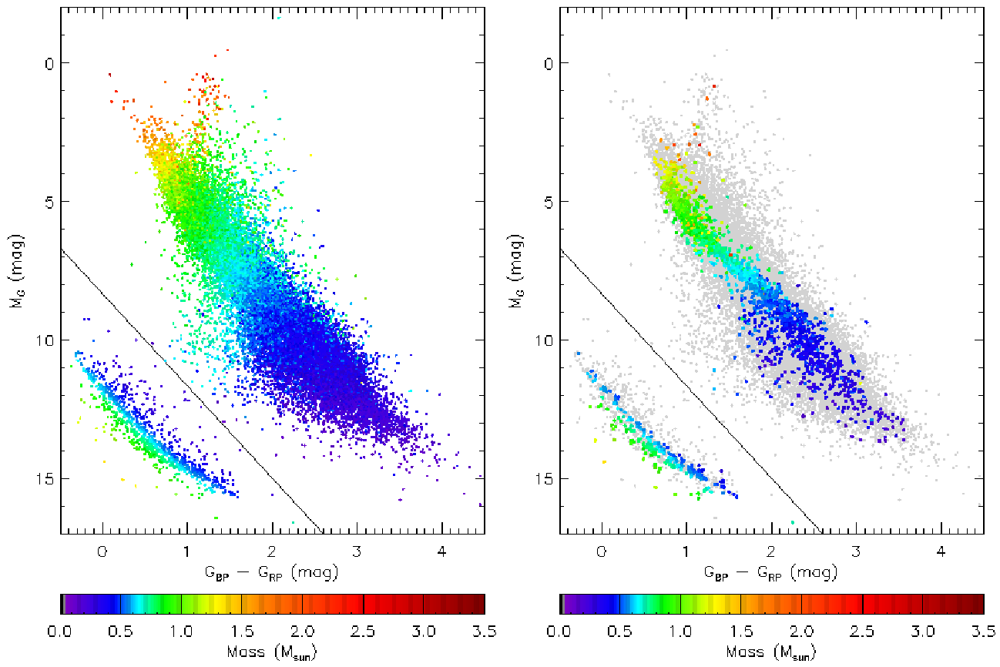
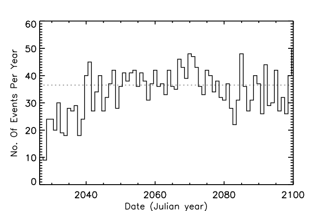
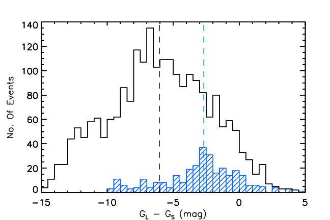
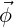
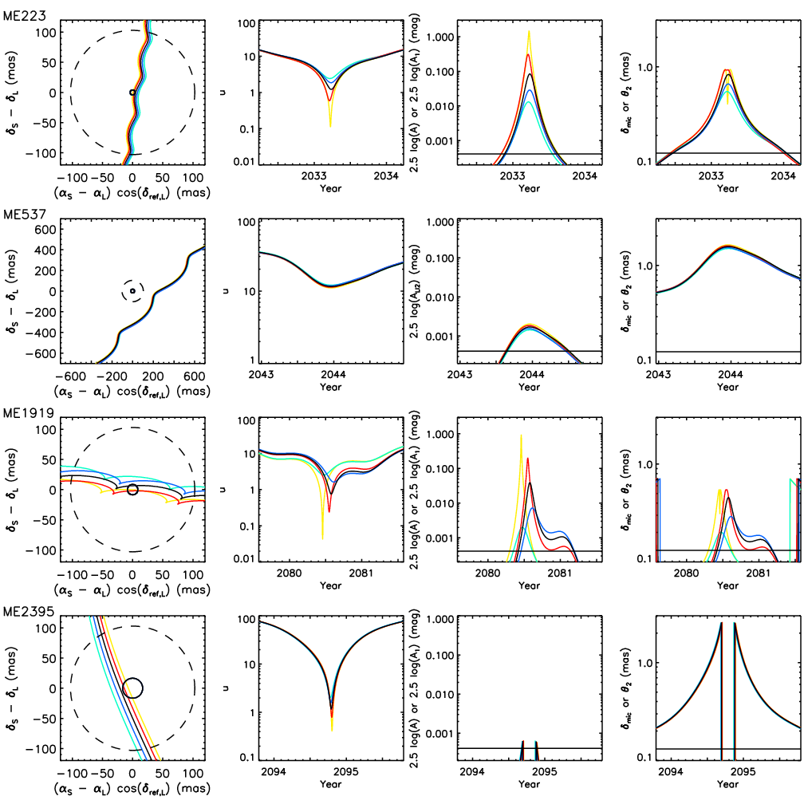

ACTA ASTRONOMICA
Vol. 58 (2008) pp. 0–0
روزنامة للأحداث المتوقعة للتعديس الميكروي في القرن 21
D.M. Bramich1 وM.B. Nielsen2
1
New York University Abu Dhabi, PO Box 129188, Saadiyat Island, Abu Dhabi,
UAE
e-mail:dan.bramich@hotmail.co.uk
2
Center for Space Science, NYUAD Institute, New York University Abu Dhabi,
PO Box 129188, Abu Dhabi, UAE
e-mail:mbn4@nyu.edu
Received 6 تموز/يوليو، 2018
ABSTRACT
باستخدام بيانات Gaia، الإصدار 2 (GDR2)، نقدّم روزنامة تضم 2,509 حدثاً متوقعاً للتعديس الميكروي، تتسبب بها 2,130 نجوم عدسية فريدة، وسيبلغ لمعانها الأقصى بين 25 تموز/يوليو 2026 ونهاية القرن. يوسّع هذا العمل بحثاً شاملاً عن أحداث التعديس الميكروي المستقبلية ويُكمله، وقد بدأه Bramich (2018) وNielsen & Bramich (2018) باستخدام GDR2. وتضم الروزنامة 161 عدسات سيتسبب كل منها في حدثين على الأقل من أحداث التعديس الميكروي. ونعرض ونناقش بعض النتائج البارزة، منها: (i) حدث تعديس ميكروي فلكي القياس بسعة عظمى قدرها ∼9.7 mas، و(ii) حدث سيسبر النظام الكوكبي لعدسة لها ثلاثة كواكب معروفة، و(iii) حدث (قابل للفصل من الفضاء) سيزداد فيه سطوع مزيج العدسة والصورة الصغرى للمصدر بمقدار قابل للرصد (∼2 mmag) بسبب ظهور الصورة الصغرى للمصدر. وستُظهر جميع أحداث التعديس الميكروي المتوقعة في الروزنامة إشارات فلكية القياس يمكن كشفها بمرافق رصد ذات قدرة فصل زاوي ودقة فلكية قياسية مماثلتين لما لدى Hubble Space Telescope، أو أفضل منه (مثل NIRCam على James Webb Space Telescope)، على الرغم من أن الأحداث ذات نسب التباين الأكثر تطرفاً بين المصدر والعدسة قد تكون صعبة الرصد. ويمكن استخدام مقاريب أرضية لا يقل قطرها عن 1 m لرصد كثير من الأحداث التي يُتوقع أيضاً أن تُظهر إشارة ضوئية.
Key words: التعديس الثقالي: ميكروي – الطرائق: تحليل البيانات – الفهارس – القياسات الفلكية – النجوم: المعلمات الأساسية
1. مقدمة
مع الإصدار الثاني الحديث من بيانات القمر الاصطناعي Gaia (GDR2; Prusti et al. 2016; Brown et al. 2018)، شهد موضوع التنبؤ بأحداث التعديس الميكروي موجة من الأعمال الجديدة والاهتمام المتزايد (Klüter et al. 2018; Bramich 2018; Mustill, Davies & Lindegren 2018; Ofek 2018; Nielsen & Bramich 2018). وقد أسفر تحليل Tycho Gaia Astrometric Solution (TGAS) لعدد ∼2 مليون نجم من الإصدار الأول لبيانات Gaia (Lindegren et al. 2016) عن تنبؤ واحد فقط بحدث تعديس ميكروي؛ هو بالتحديد للنجم القزم الأبيض LAWD 37 (McGill et al. 2018). غير أن GDR2 يتفوق كثيراً على TGAS، وعلى أي فهرس فلكي قياسي آخر موجود اليوم، من حيث تغطيته للسماء كلها، وعدد أجرامه، وحجم العينة (عمقها)، ودقته وضبطه الفلكيين القياسيين. وباحتوائه على ∼1.7 مليار جرم، منها ∼1.3 مليار لها حلول فلكية قياسية ذات 5 معلمات، يمكن أن يعمل GDR2 فهرساً لنجوم المصدر ونجوم العدسة في التعديس الميكروي معاً (مثلاً Bramich 2018؛ ويشار إليه فيما يلي بـ B18)، أو ببساطة فهرساً لنجوم المصدر في السماء كلها حتى ∼21 mag (مثلاً Nielsen & Bramich 2018). وقد افتقرت الأعمال السابقة لـ Gaia حول هذا الموضوع إلى فهارس إدخال فلكية قياسية ذات دقة كافية، مما أدى إلى تنبؤات غير مؤكدة وغير موثوقة نسبياً (مثلاً Feibelman 1966; Salim & Gould 2000; Proft, Demleitner & Wambsganss 2011). ولذلك لم يُرصد حتى الآن بنجاح سوى حدث واحد متنبأ به. فقد تنبأ Sahu et al. (2017) بحدث تعديس ميكروي لـ Stein 2051 B (وتنبأ به أيضاً بصورة مستقلة Proft, Demleitner & Wambsganss 2011)، وحصلوا على أرصاد مناسبة من Hubble Space Telescope (HST) أتاحت لهم قياس كتلة هذا القزم الأبيض على أنها ∼0.675 M⊙ مع لايقين قدره ∼8%.
يمكن استخدام أحداث التعديس الميكروي لقياس كتل النجوم المنفردة المعزولة مباشرة (مثلاً Yoo et al. 2004; Yee et al. 2009; Zhu et al. 2016)، وهي قياسات قليلة جداً حتى الآن (≲15)، وللعثور على رفقاء ذوي كتل كوكبية للعدسات (مثلاً Beaulieu et al. 2006). وبالتحديد، بالنسبة للعدسات الساطعة (أي العدسات التي يُرصد فيضها)، تتيح إشارة التعديس الفلكية القياسية وحدها تحديد كتلة العدسة ضمن ∼1-10% (Sahu et al. 2017). ولما كانت الكتل النجمية المقاسة مباشرة، والمقدرة باستقلال عن الفيزياء الداخلية المفترضة، تأتي في معظمها من أرصاد الحركة المدارية للنجوم الثنائية (Torres, Andersen & Giménez 2010)، فإن التعديس الميكروي فلكي القياس يوفر قناة مهمة إلى القياسات المباشرة لكتل النجوم المنفردة. وتوفر أحداث التعديس الميكروي التي تُظهر إشارات ضوئية وفلكية قياسية معاً قيوداً أشد على الخواص الفيزيائية للعدسة، إذ تسمح بكسر تناظرات مهمة بين المعلمات (Høg, Novikov & Polnarev 1995; Miyamoto & Yoshii 1995; Walker 1995). وتوفر الأحداث الضوئية عالية التكبير (مثلاً Udalski et al. 2005) فرصة ممتازة لاكتشاف الكواكب الخارجية. ويتمثل مفتاح هذه التطبيقات للتعديس الميكروي في الحصول على تغطية بيانات جيدة للحدث من بدايته إلى نهايته بما يسمح بتوصيفه الكامل. ومن ثم فإن التنبؤ بأحداث التعديس الميكروي مسبقاً مفيد لتخطيط الأرصاد اللازمة وتنفيذها.
لا يزال تحليل GDR2 بوصفه فهرساً للمصادر والعدسات معاً من أجل تنبؤات التعديس الميكروي غير مكتمل حالياً. ويمكن تلخيص الوضع الراهن كما يأتي. يعرض Klüter et al. (2018) ثلاثة تنبؤات منتقاة بأحداث للنجوم Luyten 143-23 (حدثان في 2018 و2021) وRoss 322 (حدث واحد في 2018)1 . أما B18، الذي أجرى بحثاً شاملاً في GDR2 على امتداد العمر (الممدد) للقمر الاصطناعي Gaia، فيورد 76 حدثاً متوقعاً يبلغ ذروته بين تموز/يوليو 2014 وتموز/يوليو 2026. ويجد B18 بصورة مستقلة حدث Ross 322 المتنبأ به لدى Klüter et al. (2018؛ الحدث ME25 في B18)، ويحسن الحدث المتنبأ به لـ LAWD 37 لدى McGill et al. (2018؛ الحدث ME4 في B18)، وبذلك يتحقق من موثوقية تنبؤات المجموعات الثلاث كلها. وفضلاً عن ذلك، يعرض B18 ثمانية تنبؤات أخرى بأحداث تعديس ميكروي لـ LAWD 37 خلال العقد القادم. غير أن الأحداث المتنبأ بها لـ Luyten 143-23 لدى Klüter et al. (2018) لا تظهر في قائمة أحداث B18 لأن هذا النجم لا يفي بمعايير اختيار النجوم العدسية لدى B18 من جهتين. فقد وُسم Luyten 143-23 في GDR2 بأنه “مصدر مكرر” يُحتمل أن يعاني مشكلات فلكية قياسية و/أو ضوئية، كما أن حله الفلكي القياسي يعاني ضجيجاً زائداً ذا دلالة عالية (ASTROMETRIC_EXCESS_NOISE_SIG = 18.0؛ كمية لا بعدية بوحدات مضاعفات سيغما).
ركز Mustill, Davies & Lindegren (2018) على العثور على أحداث تعديس ميكروي
ضوئية ستقع في العقدين القادمين (حتى تموز/يوليو 2035). ويقدمون قائمة تضم
30 حدثاً ضوئياً متوقعاً، مع أن ستة منها فقط يُتوقع أن تبلغ تكبيراً أقصى
يزيد على ∼0.4 mmag (حد الدقة الضوئية الساطعة لـ Gaia). ومن المفاجئ أن
أياً من الأحداث المتوقعة الـ 30 لا يظهر في قائمة أحداث B18 (ولا في
الروزنامة المعروضة في هذه الورقة). ويكشف فحص تفصيلي لبيانات GDR2 للنجوم
العدسية الـ 30 أن جميعها تُظهر ضجيجاً زائداً ذا دلالة عالية في حلولها
الفلكية القياسية
(3.3 < ASTROMETRIC_EXCESS_NOISE_SIG < 78.4)، ومن ثم رُفضت من عينة
النجوم العدسية لدى B18 (الذي يعتمد الشرط
ASTROMETRIC_EXCESS_NOISE_SIG < 3). وفضلاً عن ذلك، لدى اثنين من النجوم
العدسية أخطاء اختلاف منظر أكبر من 0.4 mas، مما يشير إلى حلول فلكية قياسية
زائفة (انظر القسم 4.2.6 في B18)، كما أن نجماً عدسياً آخر مصدر مكرر. وتأتي
أدلة إضافية على رداءة الحلول الفلكية القياسية لهذه النجوم العدسية من
قيم كاي-تربيع المختزلة للمواءمات، وهي >2 لمعظمها وتبلغ ∼17.1
في أسوأ الحالات. وإذا أخذنا في الاعتبار أيضاً أن تحليل Mustill,
Davies & Lindegren (2018) كان ينبغي أن يجد بصورة مستقلة بعض الأحداث
الضوئية المعروضة في B18 وفي هذه الورقة على الأقل (مثل الحدث ME19
الذي سينتج إشارة ضوئية لها مجال ±1-سيغما بين ∼0.039-0.158 mag في
أواخر 2019)، وأنهم لم يصححوا اللايقينات المقدرة بأقل من قيمتها
في معلمات الحلول الفلكية القياسية (Brown et al. 2018)، فلا يسعنا
إلا أن نستنتج أن تنبؤاتهم ينبغي أن تُعامل بحذر وأن تؤكد بحسابات
مستقلة.
أثناء العمل على ورقة B18 أدركنا أن القياسات الفلكية في GDR2 دقيقة بما يكفي فعلاً لتمكين تنبؤات موثوقة بالتعديس الميكروي إلى ما بعد نهاية أي بعثة Gaia ممددة، وفي بعض الحالات الأكثر ملاءمة حتى نهاية القرن 21. ومن ثم وسعنا تحليل B18 لإكمال بحث شامل في GDR2 عن أزواج المصدر-العدسة التي ستنتج أحداث تعديس ميكروي في آخر ∼75 سنة من هذا القرن. وتتوافق روزنامة الأحداث المعروضة في هذه الورقة تحديداً مع العدسات الساطعة الموجودة في GDR2. أما بالنسبة إلى العدسات الخافتة التي لا تظهر في GDR2، فما تزال هناك فرص كثيرة للتنبؤ بأحداث التعديس الميكروي (مثلاً Nielsen & Bramich 2018; Ofek 2018).
الغرض من هذه الورقة ونطاقها هو تقديم روزنامة لأحداث التعديس الميكروي المتوقعة للقرن 21 يمكن رصدها بمرافق الرصد القائمة أو المخطط لها. فعلى سبيل المثال، اختيرت جميع الأحداث المتوقعة في الروزنامة بحيث تُظهر إشارات فلكية قياسية كبيرة بما يكفي لتكون قابلة للكشف بمرافق رصد ذات قدرة فصل زاوي ودقة فلكية قياسية مماثلتين لما لدى HST أو أفضل منه (White 2006; Hoffmann & Anderson 2017)، على الرغم من أن الأحداث ذات نسب التباين الأكثر تطرفاً بين المصدر والعدسة قد تكون صعبة. ومن المتوقع أيضاً أن تُظهر بعض الأحداث إشارة ضوئية، وفي هذه الحالات الخاصة يمكن استخدام المقاريب الأرضية (عادة بقطر لا يقل عن 1 m) لإجراء الأرصاد الضوئية. أما James Webb Space Telescope2 ، المقرر إطلاقه في أوائل 2021، فهو مجهز على نحو ملائم بـ NIRCam (عرض دالة الانتشار النقطي عند نصف القيمة العظمى 0.064′′؛ تغطية طولية موجية 0.6-5 μm) لمتابعة الأحداث الأولى في الروزنامة، التي ستكون آخذة بالفعل في الصعود نحو ذراها في السنوات السابقة لتموز/يوليو 2026. وتتحسن نسبة التباين بين المصدر والعدسة في كثير من الأحداث (ولا سيما تلك ذات عدسات الأقزام البيضاء) تحسناً كبيراً في نطاقات الأشعة تحت الحمراء القريبة، كما تتوافر الكوروناغرافات للحالات الأصعب. وتتقدم التقنية بسرعة تجعل رصد الأحداث المتوقعة في النصف الأخير من الروزنامة أمراً مرجحاً أن يصبح روتينياً.
تنظم بقية هذه الورقة على النحو الآتي. في القسم 2 نقدّم وصفاً موجزاً للطرائق المستخدمة لتحديد الأحداث المتوقعة. وتُعرض تفاصيل الروزنامة وصيغتها في القسم 3. وأخيراً، نسلط في القسم 4 الضوء على بعض الأحداث المتوقعة المثيرة للاهتمام في العينة.
2. الطرائق
2.1. اختيار أزواج المصدر والعدسة

، وG = PHOT _G_MEAN_MAG.| GDR2 Column Name | Relation | Value | Unit | Description |
| DUPLICATED_SOURCE | = | FALSE | - | Reject duplicated objects that are likely to |
| have astrometric and photometric problems | ||||
| FRAME_ROTATOR_OBJECT_TYPE | = | 0 | - | Reject known extra-galactic objects |
| ASTROMETRIC_PARAMS_SOLVED | = | 31 | - | Only accept objects that have a 5-parameter |
| astrometric solution | ||||
| ϖ∕σ[ϖ] | > | 4 | - | Only accept objects with a sufficiently |
| precise parallax measurement | ||||
| ϖ | > | 0 | mas | Reject objects with a non-positive parallax |
| ϖ | < | 769 | mas | Reject objects with a parallax greater than |
| that of Proxima Centauri, which has a Gaia | ||||
| parallax of 768.529±0.254 mas | ||||
| σ[ϖ] | < | 0.4 | mas | Reject objects with a spurious astrometric |
| solution | ||||
 |
< | L(G) | - | Reject objects with a spurious astrometric |
| solution | ||||
| ASTROMETRIC_EXCESS_NOISE_SIG | < | 3 | - | Reject objects with significant excess noise |
| in the astrometric solution | ||||
| PHOT_BP_MEAN_MAG | ≠ | NaN | mag | Reject objects that do not have GBP-band |
| photometry | ||||
| PHOT_RP_MEAN_MAG | ≠ | NaN | mag | Reject objects that do not have GRP-band |
| photometry | ||||
تتبع الطرائق المستخدمة لتحديد أزواج المصدر-العدسة من GDR2 التي يمكن أن تؤدي إلى أحداث تعديس ميكروي تلك الموصوفة في B18 مع تعديلات طفيفة جداً. ومن ثم يُحال القارئ إلى B18 إذا احتاج إلى مزيد من التفاصيل. وفي هذا القسم وبقية الورقة، تُكتب أسماء أعمدة بيانات GDR2 بخط TYPEWRITER.
نصحح اختلافات المنظر في GDR2 بإضافة 0.029 mas إلى مدخلات PARALLAX (Lindegren et al. 2018)، ونضخم اللايقينات في المعلمات الفلكية القياسية بنسبة 25% (Brown et al. 2018). ثم نختار النجوم العدسية من GDR2 باستخدام القيود المدرجة في الجدول 1. وهذه القيود هي نفسها في B18، باستثناء فرض شرط إضافي يقضي بأن يكون للنجم العدسي قياس ضوئي GBP وGRP. ويجنبنا ذلك الاضطرار إلى استخدام أي فهارس خارجية لتقدير كتلة العدسة لاحقاً. لاحظ أن القيد σ[ϖ] < 0.4 mas، الذي كان يطبق في مرحلة لاحقة من معالجة البيانات في B18، نُقل إلى اختيار العدسات الأولي في الجدول 1. ويؤدي تطبيق هذه القيود على GDR2 إلى NL=128,270,876 نجوماً عدسية محتملة. أما بالنسبة إلى نجوم المصدر، فنستخدم تماماً العينة نفسها التي اختيرت في B18، وهي تتكون من NS=1,366,072,323 نجم.
يُعرّف مقياس الحجم الزاوي الملازم لحدث التعديس الميكروي بنصف قطر أينشتاين:
حيث إن G هو ثابت الجذب العام، وc هي سرعة الضوء، وML هي كتلة العدسة، وϖL وϖS هما اختلافا منظر العدسة والمصدر، على الترتيب. ونجري الاختيار الأولي لأزواج المصدر-العدسة بحساب حد أعلى محافظ 𝜃E,max لقيمة نصف قطر أينشتاين 𝜃E لأي زوج بعينه من المصدر والعدسة، وذلك بافتراض كتلة قصوى للعدسة مقدارها ML,max = 10M⊙، واختلاف منظر أقصى للعدسة قدره ϖL,max = ϖL + 3σ[ϖL] (حيث σ[ϖL] هو اللايقين في اختلاف منظر العدسة ϖL)، واختلاف منظر للمصدر يساوي صفراً. ويُترجم ذلك إلى نصف قطر زاوي أعظمي 𝜃det للفصل بين المصدر والعدسة يمكن ضمنه كشف إشارة تعديس ميكروي باعتبار الانحرافات الفلكية القياسية (التي لها مدى تأثير أكبر من التكبيرات الضوئية) وأفضل دقة فلكية قياسية يمكن لأي مرفق رصد حالي بلوغها في رصد منفرد (باستثناء التداخل الراديوي). فنحصل على 𝜃det = 𝜃E,max 2∕0.030 mas، حيث 0.030 mas هي دقة القياس الفلكي على اتجاه المسح عند الحد الساطع لـ Gaia (Rybicki et al. 2018; B18).
نحسب لكل نجم عدسي محتمل قيمة 𝜃det. وتبلغ القيم الدنيا والوسيطة والعظمى لـ 𝜃det على جميع النجوم العدسية ∼0.27، و2.69، و826 arcsec، على الترتيب. ولأخذ حركات المصدر والعدسة وأخطاء المعلمات الفلكية القياسية في الحسبان على نحو محافظ جداً، نحسب الكمية الآتية لكل زوج من المصدر والعدسة:
حيث إن σ[α∗,ref]∕cos(δref)، وσ[δref]، وσ[μα∗]، وσ[μδ]، وσ[ϖ] هي اللايقينات في αref (RA)، وδref (DEC)، وμα∗ (PMRA)، وμδ (PMDEC)، وϖ (PARALLAX)، على الترتيب، وTrem = 84.5 سنة هي طول الفترة من الحقبة المرجعية لـ GDR2 (J2015.5) حتى نهاية القرن 21 (J2100.0). ويقابل المؤشران السفليان S وL المصدر والعدسة، على الترتيب. ونرفض جميع أزواج المصدر-العدسة التي تتجاوز فيها المسافة الزاوية بينهما عند الزمن t = J2015.5 القيمة 𝜃det′. ويترك ذلك 80,611,203 زوجاً من المصدر والعدسة، مع 38,608,663 عدسات فريدة، للنظر فيها لاحقاً.
نحسن اختيار أزواج المصدر-العدسة على النحو الآتي. نحسب لكل نجم عدسي كتلة تقريبية للعدسة باستخدام اختلاف منظر العدسة، ومقدارها المتوسط في النطاق G، والعلاقة L∕L⊙≈ (M∕M⊙)4 لنجوم النسق الرئيس الأكثر كتلة من الشمس، وباعتماد Mbol,⊙ ≈ 4.74 mag. ولأخذ الانطفاء والتصحيحات البولومترية في الحسبان على نحو محافظ، تُضبط ML,max على أربعة أمثال تقدير كتلة العدسة. أما بالنسبة إلى النجوم العملاقة، فإن ML,max تُقدّر بأكبر من قيمتها لأنها أشد لمعاناً من نجوم النسق الرئيس، ومن ثم فإن قيمة ML,max المحسوبة بهذه الطريقة تؤدي أيضاً دور كتلة عدسية عظمى للنجوم العملاقة. وإذا كانت ML,max أصغر من حد تشاندراسيخار، نرفعها إلى 1.44M⊙ لتغطية احتمال أن تكون العدسة قزماً أبيض، وهي تعمل كذلك حداً أعلى لكتلة العدسة لنجوم النسق الرئيس دون الشمسية الكتلة والأقزام البنية. ثم نعيد حساب 𝜃E,max لكل زوج من المصدر والعدسة باستخدام هذه الحدود العليا المحسنة لكتل العدسات.
نحول القيمة الجديدة لـ 𝜃E,max لكل زوج من المصدر والعدسة إلى نصف قطر كشف أعظمي محسن 𝜃det باعتبار السلوك التقاربي للإشارات الضوئية والفلكية القياسية للتعديس في نظامي التعديس الميكروي غير المفصول والمفصول جزئياً (انظر القسم 4.2.5 في B18 للاطلاع على التفاصيل)، وباعتماد دقة Gaia الضوئية والفلكية القياسية عند الحد الساطع لرصد منفرد (بعد المتوسط على جميع زوايا المسح الممكنة). وتبلغ هذه الحدود 0.4 mmag للأرصاد الضوئية (وهو حد قابل للتطبيق على نطاق واسع على المقاريب الأرضية ومن رتبة المقدار الصحيحة للمقاريب الفضائية، مثل HST) و0.131 mas للأرصاد الفلكية القياسية (وهو مشابه لأفضل دقة فلكية قياسية يمكن أن يحققها HST وهي ∼0.2 mas، مثلاً Kains et al. 2017). وتبلغ القيم الدنيا والوسيطة والعظمى لـ 𝜃det المحسنة على جميع أزواج المصدر-العدسة ∼0.12، و0.22، و29.6 arcsec، على الترتيب.
ننظر، لكل زوج من المصدر والعدسة، في مساريهما على السماء خلال الفترة الزمنية الممتدة بين 25 تموز/يوليو 2026 (t = 2461246.5 BJD[TDB]) و1 كانون الثاني/يناير 2100 (t = 2488069.5 BJD[TDB]). وتتزامن بداية هذه الفترة الزمنية مع نهاية الفترة الزمنية المدروسة في B18. ولحساب عوامل اختلاف المنظر لجرم ما عند أي زمن t، نستخدم قيماً مجدولة للإحداثيات المركزية الباريونية للنظام الشمسي للأرض (حقبة مرجعية J2000.0؛ X(t)، وY (t)، وZ(t) بوحدة au؛ انظر القسم 7.2.2.3 في Urban & Seidelmann 2013) مقدمة بفواصل يومية للقرن 21 من خدمة حساب التقويم الفلكي الشبكية Jet Propulsion Laboratory HORIZONS 3 . ونستخدم الاستيفاء بالشريحة التكعيبية لحساب X(t)، وY (t)، وZ(t) من هذه البيانات عند أي زمن t. ونرفض جميع أزواج المصدر-العدسة التي لا يقترب أحدها من الآخر إلى مسافة زاوية أقل من 𝜃det خلال الفترة الزمنية المعتمدة. وبعد إجراء خطوة الترشيح هذه لكل زوج من المصدر والعدسة، يتبقى لدينا 57,744 زوجاً من المصدر والعدسة، مع 53,741 عدسات فريدة.
ولاستبعاد أزواج المصدر-العدسة الثنائية والمتحركة معاً، وأزواج المصدر-العدسة التي تكون فيها العدسة أبعد من المصدر، نرفض جميع أزواج المصدر-العدسة التي لها Δϖ∕σ[Δϖ] < 3 حيث:
ونرفض أيضاً جميع أزواج المصدر-العدسة التي تكون فيها نسبة الإشارة إلى الضجيج للحركة الذاتية النسبية الكلية أقل من 3. وعند هذه النقطة يصبح لدينا 43,423 زوجاً من المصدر والعدسة متبقياً، مع 39,545 عدسات فريدة.
أخيراً، ومع ضمان أن Δϖ موجبة، نعيد حساب نصف قطر الكشف الأعظمي المحسن 𝜃det لأحدث مجموعة من أزواج المصدر-العدسة باستخدام الحد الأعلى المحسن لكتلة العدسة ML,max وباعتماد Δϖmax = Δϖ + 3σ[Δϖ]، وهو ما يأخذ في الحسبان اختلاف منظر المصدر (عند توافره). وباستبعاد جميع أزواج المصدر-العدسة التي لا يقترب أحدها من الآخر إلى مسافة زاوية أقل من 𝜃det خلال الفترة الزمنية المعتمدة، تبقى لدينا عينة نهائية تتكون من 42,572 زوجاً من المصدر والعدسة، مع 38,717 عدسات فريدة.
2.2. تقدير كتلة العدسة

Figure 1: اليسار: مخطط هرتسبرونغ-راسل لـ MG مقابل GBP −GRP للنجوم العدسية الـ 38,717 في العينة النهائية من أزواج المصدر-العدسة من القسم 2.1. يفصل الخط الأسود المتصل الواصل بين (-1,5) و(5,25) mag النجوم القزمة البيضاء عن أقزام/أقزام فرعية/عمالقة النسق الرئيس (Kilic et al. 2018). وتُبيَّن كتل العدسات بلون نقاط الرسم (انظر المقياس في أسفل اللوحة). اليمين: مثل اللوحة اليسرى للنجوم العدسية الـ 2,130 في أحداث التعديس الميكروي الـ 2,509 التي عُثر عليها في القسم 2.3. رُسمت نقاط اللوحة اليسرى في الخلفية بلون رمادي فاتح.لكي نتمكن من التنبؤ بأحداث التعديس الميكروي وخصائصها من الاختيار النهائي لأزواج المصدر-العدسة، لا بد من امتلاك تقدير معقول لكتلة العدسة في كل حالة. في اللوحة اليسرى من الشكل 1، نرسم المقدار المطلق في النطاق G، أي MG، مقابل لون GBP − GRP (باستخدام PHOT_BP_MEAN_MAG وPHOT_RP_MEAN_MAG) للنجوم العدسية الـ 38,717 في العينة النهائية من أزواج المصدر-العدسة من القسم 2.1. ويُحسب المقدار المطلق G باستخدام:
حيث G هو المقدار المتوسط الظاهري في النطاق G (PHOT_G_MEAN_MAG). ولم تُبذل أي محاولة لأخذ الاحمرار والانطفاء في الحسبان في هذا الرسم.
هناك 1,007 نجوماً قزمة بيضاء تقع أسفل الخط الأسود المتصل الواصل بين (−1,5) و(5,25) mag في الشكل 1 (كما عرّفه Kilic et al. 2018). ولتقدير كتلها، نستوفي متتاليات التبرد التطوري للأقزام البيضاء من النمطين DA وDB المحسوبة خصيصاً لنطاقات مرور Gaia (Pierre Bergeron - مراسلة خاصة؛ Holberg & Bergeron 2006; Kowalski & Saumon 2006; Tremblay, Bergeron & Gianninas 2011; Bergeron et al. 2011). وتكون تقديرات الكتلة من متتاليتي التبرد DA وDB متشابهة جداً دائماً (ضمن ∼1-15%)، ولأغراض التنبؤ بأحداث التعديس الميكروي لا تكون هذه الفروق مهمة. لذلك نعتمد لكل نجم عدسي قزم أبيض أكبر تقديري الكتلة. وتُبيّن ألوان نقاط الرسم في الشكل 1 كتل العدسات المقدرة بهذه الطريقة.
هناك 37,710 من نجوم النسق الرئيس والنجوم العملاقة تقع فوق الخط المتصل في الشكل 1. ونستخدم حزمة Python المسماة isochrones (Morton 2015) لتقدير كتل العدسات، وهي تستخدم MESA (Paxton et al. 2011, 2013, 2015) Isochrones and Stellar Track Library (MIST; Dotter 2016; Choi et al. 2016). ولكل نجم عدسي، نحسب مقداري Sloan g وi من G وGBP وGRP بواسطة التحويلات ذات الصلة المعطاة في Evans et al. (2018)، ونوفر ϖL، وG، وg، وi، مع لايقيناتها، مُدخلاً إلى isochrones. وحيثما أمكن، نضع حداً علوياً لأولوية الانطفاء في isochrones باستخدام حزمة Python المسماة dustmaps مع خرائط الغبار الثلاثية الأبعاد Bayestar17 (Green et al. 2015, 2018). وتعظم حزمة isochrones الاحتمال اللاحق للمعلمات الأساسية (الكتلة، والعمر، والمعدنية، والمسافة، والانطفاء) لكل نجم عدسي وفقاً لبيانات الإدخال، وتأخذ عينات من التوزيعات اللاحقة باستخدام عيّنات المجموعة MCMC المسماة emcee (Foreman-Mackey et al. 2013). ونستخدم 300 سالكاً ينفذ كل واحد منها حرقاً تمهيدياً من 300 خطوة، ثم يكرر 500 خطوة إضافية، وتُسجل آخر 100 من هذه الخطوات. ونعتمد وسيط العينة اللاحقة تقديراً لكتلة العدسة في كل حالة. ومرة أخرى، تُبيّن ألوان نقاط الرسم في الشكل 1 كتل العدسات المقدرة بهذه الطريقة.
2.3. العثور على أحداث التعديس الميكروي
لكل واحد من أزواج المصدر-العدسة الـ 42,572 من القسم 2.1، نجري 1,000 محاكاة مونت كارلو لمساري المصدر والعدسة على السماء. وتُولّد كل محاكاة باستخدام الإجراء الآتي:
- نسحب مجموعة من المعلمات الفلكية القياسية للنجم العدسي من توزيع غاوسي متعدد المتغيرات تحدده قيم معلمات الحل الفلكي القياسي للعدسة ومصفوفة التغاير الخاصة بها المتاحة في GDR2. ونفعل الشيء نفسه لنجم المصدر.
- نستخدم تقدير كتلة العدسة ML من القسم 2.2، واختلافي منظر العدسة والمصدر ϖL وϖS، على الترتيب، المسحوبين في الخطوة (1)، لحساب نصف قطر أينشتاين 𝜃E (المعادلة 1).
- نحسب مسار المصدر بالنسبة إلى العدسة للسنوات من 2020 إلى 2106، وهو ما يحيط بالكامل بالفترة الزمنية المدروسة في هذه الورقة (من 25 تموز/يوليو 2026 إلى 1 كانون الثاني/يناير 2100).
- نحسب نسبة فيض العدسة إلى المصدر fL∕fS باستخدام قياس Gaia الضوئي في النطاق G ونعتمد قدرة فصل Gaia البالغة 103 mas (Fabricius et al. 2016). ونستخدم هذه القيم مع المسار النسبي المحسوب في الخطوة (3) لحساب سعات إشارات التعديس الضوئية والفلكية القياسية في نظام التعديس الميكروي غير المفصول (عند الحاجة) ونظامه المفصول جزئياً (انظر القسم 3 في هذه الورقة والقسم 3 في B18).
ثم نحسب السعة الوسيطة لكل إشارة من إشارات التعديس الميكروي على جميع المحاكاة الخاصة بزوج المصدر-العدسة. وبعد جمع هذه النتائج لأزواج المصدر-العدسة الـ 42,572، نرفض جميع أزواج المصدر-العدسة التي لا تتجاوز فيها أي من سعات إشارات التعديس الميكروي الوسيطة 0.4 mmag للإشارات الضوئية أو 0.131 mas للإشارات الفلكية القياسية (القسم 2.1). ونرفض أيضاً جميع أزواج المصدر-العدسة التي تقع فيها حقبة ذروة حدث التعديس الميكروي t0 خارج الفترة الزمنية من 25 تموز/يوليو 2026 إلى 1 كانون الثاني/يناير 2100. وتكون خصائص بعض الأحداث المتوقعة غير مؤكدة إلى حد ما. ولاستبعاد هذه الأحداث الأضعف جودة، نرفض جميع أزواج المصدر-العدسة التي يتجاوز فيها مجال ±1-سيغما في t0 قيمة 0.8 سنوات.
تتكون المجموعة النهائية لأحداث التعديس الميكروي المتوقعة من 2,509 حدثاً تسببها 2,130 نجوم عدسية فريدة. وتوجد في هذه العينة أحد عشر حدثاً متوقعاً من B18 لأنها تبلغ ذروتها بعد 25 تموز/يوليو 2026. وهذه الأحداث هي ME8، وME9، وME14، وME33، وME41، وME43، وME49، وME61، وME62، وME67، وME73، وتحل خصائصها المتوقعة المعروضة في هذه الروزنامة محل تلك المبلغ عنها في B18 (مثلاً لدى ME62 احتمال قدره ∼15.9% لإنتاج إشارة ضوئية لا تقل عن ∼0.03 mag). ونسمي الأحداث الباقية ME104-ME2601، متابعةً لآخر حدث متوقع أُبلغ عنه في Nielsen & Bramich (2018). وتتكون العدسات من 213 قزماً أبيض و1,917 من نجوم النسق الرئيس والنجوم العملاقة. وفي اللوحة اليمنى من الشكل 1 نرسم مخطط هرتسبرونغ-راسل للعدسات في أحداث التعديس الميكروي هذه، مع رسم عدسات اللوحة اليسرى في الخلفية بلون رمادي فاتح.
3. الروزنامة


تُقدَّم روزنامة أحداث التعديس الميكروي المتوقعة للقرن 214 في صورة جدول إلكتروني يضم 99 عموداً وصفاً واحداً لكل حدث. وتُعرّف صيغة الجدول ومعاني الأعمدة في الجدولين 2 و 3، اللذين يتضمنان أيضاً صفاً مثالياً للحدث ME2395.
تُورد هنا، تيسيراً للقارئ، التعريفات الآتية ذات الصلة بالروزنامة، ويُحال القارئ إلى القسم 3 من B18 للاطلاع على التفاصيل الكاملة. في حالة التعديس الميكروي غير المفصول، يُعطى التكبير الكلي المرصود A لمزيج المصدر والعدسة بالعلاقة:
ولمتجهي الموضع الزاوي

S و L على الكرة السماوية، المقابلين للمصدر
والعدسة على الترتيب، يمكن حساب الفصل المعياري بين المصدر والعدسة u من
خلال:
L على الكرة السماوية، المقابلين للمصدر
والعدسة على الترتيب، يمكن حساب الفصل المعياري بين المصدر والعدسة u من
خلال:
ويبلغ الفصل المعياري بين المصدر والعدسة قيمة صغرى قدرها u = u0 عند الزمن t = t0. ويُعطى انزياح المركز الضوئي الناجم عن التعديس الميكروي في النظام غير المفصول بالعلاقة:
في نظام التعديس الميكروي المفصول جزئياً، تُفصل الصورة الكبرى للمصدر عن مزيج الصورة الصغرى للمصدر والعدسة. وفي هذه الحالة، تُكبَّر الصورة الكبرى للمصدر بمقدار A1 بالنسبة إلى فيض المصدر وتُزاح عن موضع المصدر الاسمي بمسافة زاوية قدرها 𝜃2. كذلك يُكبَّر مزيج الصورة الصغرى للمصدر والعدسة بمقدار ALI2 بالنسبة إلى فيض العدسة، ويُزاح المركز الضوئي عن موضع العدسة الاسمي بمسافة زاوية قدرها 𝜃LI2. وتُعطى هذه الكميات بالعلاقات:
من المهم ملاحظة أنه عند إنشاء الروزنامة لم تُبذل أي محاولة لتحديد النجوم الثنائية (المرئية أو غير المفصولة) التي قد تلوث نجوم العدسة و/أو المصدر في بعض الأحداث المتوقعة. ويمكن أن يتراوح أثر الثنائية في التنبؤات الخاصة بأزواج المصدر-العدسة المتأثرة بين الإهمال (مثلاً إذا كانت الفترة المدارية من رتبة آلاف السنين) وإبطال حدث متوقع بالكامل (مثلاً إذا كانت الفترة المدارية من رتبة قرن). ومع ذلك، اختيرت نجوم العدسة والمصدر في هذه الدراسة بحيث تكون لها حلول فلكية قياسية لا تُظهر ضجيجاً زائداً ذا دلالة، وذلك تحديداً لاستبعاد النجوم الثنائية ذات الفترات الأقصر من العينة. ومن ثم ينبغي أن يكون تلوث العينة بالثنائيات ذات الفترات حتى ∼10× خط الأساس الزمني لـ GDR2 (أي ∼20 سنوات) قليلاً نسبياً.
في الشكل 2 نرسم عدد أحداث التعديس الميكروي المتوقعة في السنة بوصفه دالة في السنة اليوليانية. ويزداد معدل الأحداث حتى السنة ∼2040، ثم يستقر بعد ذلك عند ∼36.5 حدثاً/سنة (الخط المنقط). ونلاحظ أن أزواج المصدر-العدسة في GDR2 يجب أن تبدأ أجراماً مفصولة خلال الفترة التي جُمعت فيها بيانات GDR2 (من 25 تموز/يوليو 2014 إلى 23 أيار/مايو 2016)، وأن أزواج المصدر-العدسة المفصولة في GDR2 تفصل بينها مسافة لا تقل عن ∼0.5′′عند حقبة Gaia المرجعية (J2015.5; Arenou et al. 2018). لذلك يستغرق الأمر عدداً من السنوات قبل أن تتمكن غالبية أزواج المصدر-العدسة من الاقتراب بما يكفي للشروع في إنتاج أحداث التعديس الميكروي، مما يؤدي إلى الزيادة التدريجية المرصودة في معدل الأحداث من 2015 إلى ∼2040.
في الشكل 3 نرسم مدرجاً تكرارياً لنصف قطر أينشتاين لأحداث التعديس الميكروي في الروزنامة. وأكبر قيمة لـ 𝜃E هي ∼39.76 mas للحدث ME675 الناجم عن النجم العدسي القزم الأبيض Wolf 28 (المسافة ∼4.31 pc). غير أن معظم قيم 𝜃E تقع دون ∼20 mas، مع قمة عند ∼4 mas. ويعود القطع دون 𝜃E ≈ 4 mas إلى أن العدسات الأبعد والأبطأ حركة لا تمتلك وقتاً كافياً قبل السنة 2100 كي تقترب بالكامل من نجوم مصدر محتملة. والواقع أن جميع العدسات في الروزنامة أقرب من 1.9 kpc، وأن 95.9% من العدسات أقرب من 500 pc.
في الشكل 4 نرسم مدرجين تكراريين لفرق المقدار GL −GS لأحداث التعديس
الميكروي في الروزنامة، حيث إن GL وGS هما المقداران المتوسطان في النطاق
G للعدسة ونجم المصدر، على الترتيب. ويقابل المدرجان الأسود والأزرق
أقزام/أقزام فرعية/عمالقة النسق الرئيس والأقزام البيضاء، على الترتيب.
والأحداث المتوقعة الأكثر ملاءمة لأرصاد المتابعة هي تلك التي تكون فيها
العدسة أخفت من المصدر. وهناك 118 حدثاً من هذا النوع تكون فيها العدسة
نجماً من النسق الرئيس
قزماً/قزماً فرعياً/عملاقاً، و39 حدثاً من هذا النوع تكون فيها العدسة
نجماً قزماً أبيض. وتبيّن المدرجات التكرارية، مع قيمها الوسيطة، أن
التباين بين عدسة قزم أبيض والمصدر يكون عادة أقل بكثير من التباين بين عدسة
من قزم/قزم فرعي/عملاق من النسق الرئيس والمصدر، مما يدل على أن الأحداث
المتوقعة ذات عدسات الأقزام البيضاء ستكون عموماً أقل صعوبة في
الرصد.
ومع إصدارات بيانات Gaia المستقبلية (مثل GDR3 المقرر في أواخر 2020)، نعتزم تحسين التنبؤات في الروزنامة وإضافة تنبؤات جديدة للنجوم التي لم تُدرج في GDR2 (مثلاً لنسبة ∼17% من النجوم ذات الحركات الذاتية الأكبر من ∼0.6 arcsec yr−1 الغائبة عن GDR2 - Brown et al. 2018).
4. بعض الأحداث البارزة

Figure 5: أحداث التعديس الميكروي ME223، وME537، وME1919، وME2395. في جميع اللوحات، تُرسم خمسة منحنيات بالألوان الأصفر والأحمر والأسود والأزرق والسماوي. ويقابل كل منحنى المئينات 2.3، و15.9، و50، و84.1، و97.7، على الترتيب، من نتائج محاكاة مونت كارلو المنفذة في القسم 2.3 بعد ترتيبها بحسب ازدياد u0. وتُرسم المنحنيات الصفراء والسماوية أولاً، ثم الحمراء والزرقاء، وأخيراً المنحنى الأسود، وهذا هو سبب كون المنحنى الأسود الأوضح رؤية عندما يصعب تمييز المنحنيات الفردية. اللوحات اليسرى: مسار نجم المصدر بالنسبة إلى النجم العدسي. وتُعرض حلقة أينشتاين على شكل دائرة نصف قطرها 𝜃E ومركزها موضع العدسة (مرسومة أيضاً خمس مرات بخمسة ألوان مختلفة). وتُبيَّن قدرة فصل Gaia بدائرة نصف قطرها 103 mas ومركزها موضع العدسة (منحنى متقطع). اللوحات الوسطى اليسرى: التطور الزمني للفصل المعياري بين المصدر والعدسة u (𝜃E). اللوحات الوسطى اليمنى: التطور الزمني للإشارات الضوئية 2.5log(A) (mag؛ النظام غير المفصول) و 2.5log(A1) (mag؛ النظام المفصول جزئياً). لاحظ أنه بالنسبة إلى ME537، تُرسم 2.5log(ALI2) (mag؛ النظام المفصول جزئياً) بدلاً من ذلك. ويمكن العثور على تعريفات A، وA1، و ALI2 في القسم 3. ويدل الخط الأسود الأفقي على حد الدقة الضوئية البالغ 0.4 mmag من القسم 2.1. اللوحات اليمنى: التطور الزمني للإشارات الفلكية القياسية δmic (mas؛ النظام غير المفصول) و𝜃2 (mas؛ النظام المفصول جزئياً). ويمكن العثور على تعريفات δmic و𝜃2 في القسم 3. ويدل الخط الأسود الأفقي على حد الدقة الفلكية القياسية البالغ 0.131 mas من القسم 2.1.تحتوي الروزنامة على 161 عدسات سيتسبب كل منها في حدثين على الأقل من أحداث التعديس الميكروي، وعلى ست عدسات سيتسبب كل منها في 10 أحداث على الأقل (LAWD 37، وHD 1806175 ، وGJ 674، وHD 39194، وHD 145417، وGJ 588). والعدسة الأكثر إنتاجاً لأحداث التعديس الميكروي هي LAWD 37، التي ستنتج 41 حدثاً بين السنتين 2026 و2100. ومن المثير للاهتمام أن GJ 674 وHD 39194، من بين العدسات الست المذكورة، لهما رفيق كوكبي مؤكد واحد وثلاثة رفقاء كوكبيين مؤكدين، على الترتيب (Bonfils et al. 2007; Mayor et al. 2011). وبالإسقاط على السماء، تقع هذه الكواكب عند فواصل من رتبة ∼1-10 mas عن نجومها المضيفة. وللأسف، لن يقترب GJ 674 من أي نجوم مصدر بما يكفي لإنتاج حدث ضوئي (مع أنه سيتسبب في أربعة أحداث ممتازة للتعديس الميكروي فلكي القياس بانحرافات مصدر أكبر من ∼3 mas). غير أن HD 39194 سيقترب من نجم مصدر بما يكفي لسبر نظامه الكوكبي في الحدث ME2395.
HD 39194 نجم قزم من الصنف K0 مؤكد طيفياً (Gray et al. 2006) له GL ≈ 7.85 mag ويقع في اتجاه سحابة ماجلان الكبرى. ونجم المصدر في الحدث ME2395 أخفت بنحو 12 مقادير وله GS ≈ 19.8 mag. وسيبلغ الحدث ذروته في 16 تشرين الأول/أكتوبر 2094 (±3 d). وسيحقق انحرافاً أعظمياً للمصدر قدره ∼2.6 mas، وسيُظهر أيضاً إشارة ضوئية صغيرة (∼0.7 mmag). وستكون كلتا الإشارتين مكبوتتين بشدة في نظام التعديس الميكروي غير المفصول. ويوضح الشكل 5 كيف سيتطور الحدث. وتعود القفزات في المنحنيات الضوئية والفلكية القياسية إلى انتقال الحدث بين التعديس الميكروي المفصول جزئياً وغير المفصول عند قدرة فصل Gaia البالغة 103 mas. ومن الواضح أن هذا السلوك يعتمد على المقراب/الأداة. واحتمال أن يقترب المصدر والعدسة أحدهما من الآخر إلى مسافة زاوية أقل من 2𝜃E ≈ 33.1 mas هو 97.2%. ويبرهن هذا الحدث بوضوح قدرة قياسات Gaia الفلكية على تقديم تنبؤات موثوقة بأحداث التعديس الميكروي إلى زمن بعيد في المستقبل (∼76 سنة في هذه الحالة)، وبعد رحيل المؤلفين بزمن طويل.
من المرجح جداً أن يُظهر ME223 (الشكل 5) إشارة ضوئية سهلة الكشف (مجال ±2-سيغما لـ ΔA هو ∼0.013-1.657 mag) مع إنتاج إشارة فلكية قياسية قوية أيضاً (∼0.84 mas). كما أن لديه إمكانية أن يصبح حدث تعديس ميكروي عالي التكبير حساساً للرفقاء الكوكبيين للعدسة (P(u0 < 1) = 0.363). والنجم العدسي (غير موجود في SIMBAD6 ) هو نجم من النسق الرئيس (يرجح أنه قزم K؛ ∼0.6 M⊙) عند ∼253 pc وله GL ≈ 14.62 mag، وهو أسطع من نجم المصدر بمقدار ∼0.62 mag فقط (عند ∼2.4 kpc؛ وللأسف لا توجد للمصدر معلومات لونية في GDR2). وسيبلغ الحدث ذروته في 28 آذار/مارس 2033 (±8 d).
سيكون ME537 حدثاً نادراً جداً، إذ سيزداد سطوع مزيج العدسة والصورة الصغرى للمصدر بمقدار ∼1.7±0.2 mmag بسبب ظهور الصورة الصغرى للمصدر مع تطور الحدث بالكامل في نظام التعديس الميكروي المفصول جزئياً (الشكل 5). وفي المقابل، سيكون ازدياد سطوع المصدر أصغر بكثير عند ∼0.1 mmag. وسيحدث ذلك لأن نجم المصدر أسطع من العدسة بمقدار ∼3.66 mag في النطاق G (GL ≈ 17.44 mag و GS ≈ 13.78 mag)، ولأن نصف قطر أينشتاين كبير إلى حد معقول (𝜃E ≈ 18.1 mas)، وستمر العدسة بالقرب من المصدر (𝜃E u0 ≈ 209 mas)، لكن الحدث سيبقى مع ذلك في النظام المفصول جزئياً (على الأقل لبعض المقاريب الفضائية مثل Gaia وHST). وسيكون الحدث أكثر ملاءمة في النطاقات الموجية الأكثر احمراراً لأن النجم العدسي (قزم أبيض؛ PM J07228-3042) أكثر زرقة من نجم المصدر (غير موجود في SIMBAD). وبالإضافة إلى الإشارة الضوئية للعدسة، سيُظهر الحدث انحرافاً للمصدر قدره ∼1.54 mas. وستحدث ذروة الحدث في 17 كانون الأول/ديسمبر 2043 (±3 d). ولا يوجد سوى حدثين آخرين مشابهين لـ ME537، مع أنهما ليسا ملائمين بالقدر نفسه. وهذان الحدثان هما ME1609 وME2252.
ME1919 حدث مثير للاهتمام لأن الإشارات الضوئية والفلكية القياسية ستكون ذات ذروتين (الشكل 5) نتيجة التفاعل بين حركة اختلاف منظر العدسة وحركتها الذاتية، وكذلك لأن العدسة ستمر قريبة جداً من نجم المصدر (P(u0 < 1) = 0.616). ولدى الحدث إمكانية بلوغ تكبير عال، على الرغم من أن كون العدسة أسطع من المصدر بمقدار ∼2.95 mag سيكبت الإشارة (النطاقات الموجية الأكثر احمراراً أكثر ملاءمة). وستحدث الذروة الأولى في 17 تموز/يوليو 2080 (±26 d). والعدسة (غير موجودة في SIMBAD) نجم من النسق الرئيس (يرجح أنه قزم K متأخر/قزم M مبكر؛ ∼0.5 M⊙).
لعل الحدث الأكثر غرابة في الروزنامة هو ME309، الذي سيتسبب به القزم الأبيض DA6.6، WD 1223-659 (Gianninas, Bergeron & Ruiz 2011). وتتقدم الحركة النسبية بين المصدر والعدسة في حلقات بسبب الحركة الكبيرة لاختلاف منظر العدسة وحركتها الذاتية البطيئة نسبياً. وسينتج عن ذلك قمم متعددة في كل من الإشارات الضوئية والفلكية القياسية مع الزمن (السعات ∼1 mmag و∼2.8 mas، على الترتيب؛ الشكل 6). وسيبلغ الحدث أعلى ذروتين له خلال السنة 2036. وللأسف، فإن WD 1223-659 أسطع من نجم المصدر بمقدار ∼2.96 mag في النطاق G، مما سيكبت إشارات التعديس الميكروي عندما يدخل الحدث النظام غير المفصول. ومن هذه الناحية، سيكون رصد الحدث في نطاقات موجية أكثر احمراراً أفضل.
أخيراً، ME1024 هو الحدث في الروزنامة الذي سيُظهر أكبر سعة لإشارة فلكية قياسية (∼9.70±0.04 mas) لأن له نصف قطر أينشتاين كبيراً (𝜃E ≈ 33.1 mas)، ومن المرجح جداً أن يمر المصدر ضمن مسافة زاوية قدرها 2𝜃E من العدسة (P(u0 < 2) = 0.801). وقد تكون هناك أيضاً إشارة ضوئية مصاحبة قدرها ∼8 mmag (الشكل 6). والنجم العدسي GJ 15 A هو نجم قزم M1.0 مؤكد طيفياً (Trifonov et al. 2018) على مسافة ∼3.56 pc وله كوكب كتلته ∼5 كتلة أرضية في مدار مدته ∼11.4 d (Howard et al. 2014). وهو جزء من ثنائي مرئي له رفيق M3.5 (GJ 15 B; Lépine et al. 2013) له فترة مدارية مقدارها ∼1250 سنة (Romanenko & Kiselev 2014). وبما أن ذروة الحدث ستقع بعد ∼39 سنة، في 7 آذار/مارس 2057 (±7 d)، فقد تؤثر الحركة الثنائية إلى حد ما في تفاصيل تنبؤ الحدث المعروض هنا. وفي حين أن الحدث الضوئي قد يقع أو لا يقع نتيجة لذلك، فمن غير المرجح أن تتغير سعة الإشارة الفلكية القياسية كثيراً لأنها أقل اعتماداً بكثير على اصطفاف دقيق بين المصدر والعدسة. وفي نظام التعديس الميكروي غير المفصول، سيكبت النجم العدسي إشارات التعديس الميكروي بشدة لأنه أسطع من المصدر بمقدار ∼13.5 mag (GL ≈ 7.22 mag وGS ≈ 20.75 mag). وتضم الروزنامة أحداثاً متعددة مشابهة ذات سعات عالية جداً للتعديس الميكروي فلكي القياس.
توضح الأحداث المتوقعة التي سُلّط عليها الضوء في هذا القسم كيف يمكن للإصدارات الحالية والمستقبلية من الروزنامة أن توفر مورداً لا يقدر بثمن لدراسات التعديس الميكروي.
Acknowledgements. نشكر الحكم المجهول على تخصيص الوقت لمراجعة هذه
الورقة وعلى تقديم تعليقات نافذة أسهمت في تحسين المحتوى. ويقر DMB بدعم
NYU Abu Dhabi Research Enhancement Fund بموجب المنحة RE124. ويتلقى
MBN الدعم من منحة NYUAD Institute رقم G1502. وقد استخدمت كثير من
الحسابات المنفذة في هذه الورقة شيفرة من مكتبة DanIDL لروتينات IDL
(Bramich 2017) المتاحة على
http://www.danidl.co.uk. ونحن ممتنون لـ Pierre Bergeron لتوفيره نماذج تبرد
الأقزام البيضاء في نطاقات مرور Gaia. أُجري هذا البحث على موارد الحوسبة
عالية الأداء في New York University Abu Dhabi. كما نتوجه بالشكر إلى Nasser
Al Ansari وMuataz Al Barwani وGuowei He وFayizal Mohammed Kunhi على
دعمهم الممتاز. ونود أيضاً أن نشكر Solar System Dynamics Group في Jet
Propulsion Laboratory على توفير Horizons On-Line Ephemeris System.
واستخدمنا على نطاق واسع موارد الويب SIMBAD وVizieR كما يوفرها Centre de
Données astronomiques de Strasbourg. وقد استفاد هذا العمل من بيانات بعثة
وكالة الفضاء الأوروبية (ESA) Gaia (https://www.cosmos.esa.int/gaia)،
التي عالجها Gaia Data Processing and Analysis Consortium (DPAC,
https://www.cosmos.esa.int/web/gaia/dpac/consortium). وقد قُدم تمويل DPAC
من مؤسسات وطنية، ولا سيما المؤسسات المشاركة في Gaia Multilateral
Agreement.
REFERENCES
-
Arenou F. et al. 2018, A&A, 616, A17.
-
Beaulieu J.-P. et al. 2006, Nature, 439, 437.
-
Bergeron P. et al. 2011, ApJ, 737, 28.
-
Bonfils X. et al. 2007, A&A, 474, 293.
-
Bramich D.M. 2018, A&A, Accepted, (B18).
-
Bramich D.M. 2017, Astrophysics Source Code Library, record ascl:1709.005, .
-
Brown A.G.A. et al. 2018, A&A, in press, .
-
Choi J., Dotter A., Conroy C., Cantiello M., Paxton B. & Johnson B.D. 2016, ApJ, 823, 102.
-
Dotter A. 2016, ApJS, 222, 8.
-
Evans D.W. et al. 2018, A&A, 616, A4.
-
Explanatory Supplement to the Astronomical Almanac 2013, 3rd edition, ed. S. Urban & P.K. Seidelmann (University Science Books, Mill Valley, California), p263, .
-
Fabricius C. et al. 2016, A&A, 595, A3.
-
Feibelman W.A. 1966, Science, 151, 73.
-
Foreman-Mackey D., Hogg D.W., Lang D. & Goodman J. 2013, PASP, 125, 306.
-
Gianninas A., Bergeron P. & Ruiz M.T. 2011, ApJ, 743, 138.
-
Gray R.O., Corbally C.J., Garrison R.F., McFadden M.T., Bubar E.J., McGahee C.E., O’Donoghue A.A. & Knox E.R. 2006, AJ, 132, 161.
-
Green G.M. et al. 2015, ApJ, 810, 25.
-
Green G.M. et al. 2018, MNRAS, 478, 651.
-
Hoffmann S.L. & Anderson J. 2017, http://www.stsci.edu/hst/acs/documents/isrs/isr1708.pdf, , .
-
Høg E., Novikov I.D. & Polnarev A.G. 1995, A&A, 294, 287.
-
Holberg J.B. & Bergeron P. 2006, AJ, 132, 1221.
-
Howard A.W. et al. 2014, ApJ, 794, 51.
-
Kains N. et al. 2017, ApJ, 843, 145.
-
Kilic M., Hambly N.C., Bergeron P., Genest-Beaulieu C. & Rowell N. 2018, MNRAS, 479, 113.
-
Klüter J., Bastian U., Demleitner M. & Wambsganss J. 2018, A&A, 615, 11.
-
Kowalski P.M. & Saumon D. 2006, ApJ, 651, 137.
-
Lépine S., Hilton E.J., Mann A.W., Wilde M., Rojas-Ayala B., Cruz K.L. & Gaidos E. 2013, AJ, 145, 102.
-
Lindegren L. et al. 2016, A&A, 595, A4.
-
Lindegren L. et al. 2018, A&A, 616, A2.
-
Mayor M. et al. 2011, arXiv, 1109.2497, .
-
McGill P., Smith L.C., Evans N.W., Belokurov V. & Smart R.L. 2018, MNRAS, 478, 29.
-
Miyamoto M. & Yoshii Y. 1995, AJ, 110, 1427.
-
Morton T.D. 2015, Astrophysics Source Code Library, ascl:1503.010, .
-
Mustill A.J., Davies M.B. & Lindegren L. 2018, A&A, submitted, .
-
Nielsen M.B. & Bramich D.M. 2018, AcA, submitted, .
-
Ofek E.O. 2018, ApJ, submitted, .
-
Paxton B., Bildsten L., Dotter A., Herwig F., Lesaffre P. & Timmes F. 2011, ApJS, 192, 3.
-
Paxton B. et al. 2013, ApJS, 208, 4.
-
Paxton B. et al. 2015, ApJS, 220, 15.
-
Proft S., Demleitner M. & Wambsganss J. 2011, A&A, 536, 50.
-
Prusti T. et al. 2016, A&A, 595, A1.
-
Romanenko L.G. & Kiselev A.A. 2014, Astron. Rep., 58, 30.
-
Rybicki K.A., Wyrzykowski Ł., Klencki J., de Bruijne J., Belczyński K. & Chruślińska M. 2018, MNRAS, 476, 2013.
-
Sahu K.C. et al. 2017, Science, 356, 1046.
-
Salim S. & Gould A. 2000, ApJ, 539, 241.
-
Torres G., Andersen J. & Giménez A. 2010, Astron. Astrophys. Rev., 18, 67.
-
Tremblay P.-E., Bergeron P. & Gianninas A. 2011, ApJ, 730, 128.
-
Trifonov T. et al. 2018, A&A, 609, 117.
-
Udalski A. et al. 2005, ApJ, 628, 109.
-
van Biesbroeck G. 1961, AJ, 66, 528.
-
Walker M.A. 1995, ApJ, 453, 37.
-
White R.L. 2006, http://www.stsci.edu/hst/acs/documents/isrs/isr0605.pdf, , .
-
Yee J.C. et al. 2009, ApJ, 703, 2082.
-
Yoo J. et al. 2004, ApJ, 603, 139.
-
Zhu W. et al. 2016, ApJ, 825, 60.
| Column | Column | Example | Description |
| Number | Name | Event ME2395 | |
| 1 | Event Name | ME2395 | The name of the predicted microlensing event |
| 2 | Lens Spectral Type | MS | Lens star type: WD = white dwarf, MS = main |
| sequence/subdwarf/giant | |||
| 3 | Lens GDR2 ID | 4657193606465368704 | Lens GDR2 source ID |
| 4 | αref,L | 86.1290710186 | Lens right ascension at the reference epoch J2015.5 (deg) |
| 5 | σ[α∗,ref,L] | 0.042 | Uncertainty on αref,L cos(δref,L) (mas) |
| 6 | δref,L | −70.1382377141 | Lens declination at the reference epoch J2015.5 (deg) |
| 7 | σ[δref,L] | 0.048 | Uncertainty on δref,L (mas) |
| 8 | μα∗,L | −309.424 | Lens proper motion in right ascension (mas/year) |
| 9 | σ[μα∗,L] | 0.078 | Uncertainty on μα∗,L (mas/year) |
| 10 | μδ,L | 1238.780 | Lens proper motion in declination (mas/year) |
| 11 | σ[μδ,L] | 0.098 | Uncertainty on μδ,L (mas/year) |
| 12 | ϖL | 37.860 | Lens parallax (mas) |
| 13 | σ[ϖL] | 0.047 | Uncertainty on ϖL (mas) |
| 14 | GL | 7.8520 | Lens G-band mean magnitude (mag) |
| 15 | σ[GL] | 0.0002 | Uncertainty on GL (mag) |
| 16 | GBP,L | 8.2816 | Lens GBP-band mean magnitude (mag) |
| 17 | σ[GBP,L] | 0.0016 | Uncertainty on GBP,L (mag) |
| 18 | GRP,L | 7.3085 | Lens GRP-band mean magnitude (mag) |
| 19 | σ[GRP,L] | 0.0039 | Uncertainty on GRP,L (mag) |
| 20 | ML | 0.89 | Lens mass estimate (M⊙) |
| 21 | Source GDR2 ID | 4657195114116751360 | Source GDR2 source ID |
| 22 | αref,S | 86.1090246836 | Source right ascension at the reference epoch J2015.5 (deg) |
| 23 | σ[α∗,ref,S] | 0.904 | Uncertainty on αref,S cos(δref,S) (mas) |
| 24 | δref,S | −70.1109601904 | Source declination at the reference epoch J2015.5 (deg) |
| 25 | σ[δref,S] | 1.194 | Uncertainty on δref,S (mas) |
| 26 | μα∗,S | - | Source proper motion in right ascension (mas/year) |
| 27 | σ[μα∗,S] | - | Uncertainty on μα∗,S (mas/year) |
| 28 | μ δ,S | - | Source proper motion in declination (mas/year) |
| 29 | σ[μδ,S] | - | Uncertainty on μδ,S (mas/year) |
| 30 | ϖS | - | Source parallax (mas) |
| 31 | σ[ϖS] | - | Uncertainty on ϖS (mas) |
| 32 | GS | 19.7920 | Source G-band mean magnitude (mag) |
| 33 | σ[GS] | 0.0094 | Uncertainty on GS (mag) |
| 34 | GBP,S | - | Source GBP-band mean magnitude (mag) |
| 35 | σ[GBP,S] | - | Uncertainty on GBP,S (mag) |
| 36 | GRP,S | - | Source GRP-band mean magnitude (mag) |
| 37 | σ[GRP,S] | - | Uncertainty on GRP,S (mag) |
| 38 | 2.3%tile 𝜃E | 16.527 | 2.3 percentile of the Einstein radius (mas) |
| 39 | 15.9%tile 𝜃E | 16.537 | 15.9 percentile of the Einstein radius (mas) |
| 40 | Median 𝜃E | 16.547 | Median of the Einstein radius (mas) |
| 41 | 84.1%tile 𝜃E | 16.557 | 84.1 percentile of the Einstein radius (mas) |
| 42 | 97.7%tile 𝜃E | 16.567 | 97.7 percentile of the Einstein radius (mas) |
| 43 | 2.3%tile u0 | 0.40 | 2.3 percentile of the minimum normalised source-lens |
| separation u0 (𝜃E) | |||
| 44 | 15.9%tile u0 | 0.79 | 15.9 percentile of the minimum normalised source-lens |
| separation u0 (𝜃E) | |||
| 45 | Median u0 | 1.18 | Median of the minimum normalised source-lens |
| separation u0 (𝜃E) | |||
| 46 | 84.1%tile u0 | 1.59 | 84.1 percentile of the minimum normalised source-lens |
| separation u0 (𝜃E) | |||
| 47 | 97.7%tile u0 | 2.05 | 97.7 percentile of the minimum normalised source-lens |
| separation u0 (𝜃E) | |||
| 48 | P(u0 < 1) | 0.338 | Probability that the event will have u0 < 1 |
| 49 | P(u0 < 2) | 0.972 | Probability that the event will have u0 < 2 |
| 50 | P(u0 < 5) | 1.000 | Probability that the event will have u0 < 5 |
| 51 | P(u0 < 10) | 1.000 | Probability that the event will have u0 < 10 |
| Column | Column | Example | Description |
| Number | Name | Event ME2395 | |
| 52 | 2.3%tile 𝜃E u0 | 6.67 | 2.3 percentile of the minimum source-lens separation |
| 𝜃E u0 (mas) | |||
| 53 | 15.9%tile 𝜃E u0 | 13.00 | 15.9 percentile of the minimum source-lens separation |
| 𝜃E u0 (mas) | |||
| 54 | Median 𝜃E u0 | 19.47 | Median of the minimum source-lens separation 𝜃E u0 (mas) |
| 55 | 84.1%tile 𝜃E u0 | 26.30 | 84.1 percentile of the minimum source-lens separation |
| 𝜃E u0 (mas) | |||
| 56 | 97.7%tile 𝜃E u0 | 33.83 | 97.7 percentile of the minimum source-lens separation |
| 𝜃E u0 (mas) | |||
| 57 | P(𝜃E u0 < 100 mas) | 1.000 | Probability that the event will have 𝜃E u0 < 100 mas |
| 58 | P(𝜃E u0 < 200 mas) | 1.000 | Probability that the event will have 𝜃E u0 < 200 mas |
| 59 | P(𝜃E u0 < 500 mas) | 1.000 | Probability that the event will have 𝜃E u0 < 500 mas |
| 60 | P(𝜃E u0 < 1000 mas) | 1.000 | Probability that the event will have 𝜃E u0 < 1000 mas |
| 61 | 2.3%tile t0 | 2094.77563 | 2.3 percentile of the epoch of the event peak t0 (Julian year) |
| 62 | 15.9%tile t0 | 2094.78296 | 15.9 percentile of the epoch of the event peak t0 (Julian year) |
| 63 | Median t0 | 2094.78912 | Median of the epoch of the event peak t0 (Julian year) |
| 64 | 84.1%tile t0 | 2094.79582 | 84.1 percentile of the epoch of the event peak t0 (Julian year) |
| 65 | 97.7%tile t0 | 2094.80240 | 97.7 percentile of the epoch of the event peak t0 (Julian year) |
| 66 | 2.3%tile Δ(A,A1) | 0.0007 | 2.3 percentile of the difference between the minimum and |
| maximum source magnifications over the time period | |||
| adopted in this paper (mag) | |||
| 67 | 15.9%tile Δ(A,A1) | 0.0007 | 15.9 percentile of Δ(A,A1) (mag) |
| 68 | Median Δ(A,A1) | 0.0007 | Median of Δ(A,A1) (mag) |
| 69 | 84.1%tile Δ(A,A1) | 0.0007 | 84.1 percentile of Δ(A,A1) (mag) |
| 70 | 97.7%tile Δ(A,A1) | 0.0007 | 97.7 percentile of Δ(A,A1) (mag) |
| 71 | 2.3%tile T[Δ(A,A1)] | 13.07 | 2.3 percentile of the amount of time that the source spends |
| with its magnification above min{A,A1} + Δ(A,A1)∕2 (d) | |||
| 72 | 15.9%tile T[Δ(A,A1)] | 13.20 | 15.9 percentile of T[Δ(A,A1)] (d) |
| 73 | Median T[Δ(A,A1)] | 13.37 | Median of T[Δ(A,A1)] (d) |
| 74 | 84.1%tile T[Δ(A,A1)] | 13.62 | 84.1 percentile of T[Δ(A,A1)] (d) |
| 75 | 97.7%tile T[Δ(A,A1)] | 13.95 | 97.7 percentile of T[Δ(A,A1)] (d) |
| 76 | P(Δ(A,A1) > 0.4 mmag) | 1.000 | Probability that the event will yield a source magnification |
| above 0.4 mmag | |||
| 77 | 2.3%tile ΔA LI2 | 0.0000 | 2.3 percentile of the difference between the minimum and |
| maximum lens magnifications over the time period | |||
| adopted in this paper (mag) | |||
| 78 | 15.9%tile ΔALI2 | 0.0000 | 15.9 percentile of ΔALI2 (mag) |
| 79 | Median ΔALI2 | 0.0000 | Median of ΔALI2 (mag) |
| 80 | 84.1%tile ΔALI2 | 0.0000 | 84.1 percentile of ΔALI2 (mag) |
| 81 | 97.7%tile ΔALI2 | 0.0000 | 97.7 percentile of ΔALI2 (mag) |
| 82 | P(ΔALI2 > 0.4 mmag) | 0.000 | Probability that the event will yield a lens magnification |
| above 0.4 mmag | |||
| 83 | 2.3%tile Δ(δmic,𝜃2) | 2.586 | 2.3 percentile of the difference between the minimum and |
| maximum source astrometric shifts over the time period | |||
| adopted in this paper (mas) | |||
| 84 | 15.9%tile Δ(δmic,𝜃2) | 2.589 | 15.9 percentile of Δ(δmic,𝜃2) (mas) |
| 85 | Median Δ(δmic,𝜃2) | 2.592 | Median of Δ(δmic,𝜃2) (mas) |
| 86 | 84.1%tile Δ(δmic,𝜃2) | 2.595 | 84.1 percentile of Δ(δmic,𝜃2) (mas) |
| 87 | 97.7%tile Δ(δmic,𝜃2) | 2.598 | 97.7 percentile of Δ(δmic,𝜃2) (mas) |
| 88 | 2.3%tile T[Δ(δmic,𝜃2)] | 67.22 | 2.3 percentile of the amount of time that the source spends |
| with its astrometric shift above | |||
| min{δmic,𝜃2} + Δ(δmic,𝜃2)∕2 (d) | |||
| 89 | 15.9%tile T[Δ(δmic,𝜃2)] | 67.62 | 15.9 percentile of T[Δ(δmic,𝜃2)] (d) |
| 90 | Median T[Δ(δmic,𝜃2)] | 68.20 | Median of T[Δ(δmic,𝜃2)] (d) |
| 91 | 84.1%tile T[Δ(δmic,𝜃2)] | 68.97 | 84.1 percentile of T[Δ(δmic,𝜃2)] (d) |
| 92 | 97.7%tile T[Δ(δmic,𝜃2)] | 70.05 | 97.7 percentile of T[Δ(δmic,𝜃2)] (d) |
| 93 | P(Δ(δmic,𝜃2) > 0.131 mas) | 1.000 | Probability that the event will yield a source astrometric |
| shift above 0.131 mas | |||
| 94 | 2.3%tile Δ𝜃LI2 | 0.000 | 2.3 percentile of the difference between the minimum and |
| maximum lens astrometric shifts over the time period | |||
| adopted in this paper (mas) | |||
| 95 | 15.9%tile Δ𝜃LI2 | 0.000 | 15.9 percentile of Δ𝜃LI2 (mas) |
| 96 | Median Δ𝜃LI2 | 0.000 | Median of Δ𝜃LI2 (mas) |
| 97 | 84.1%tile Δ𝜃LI2 | 0.000 | 84.1 percentile of Δ𝜃LI2 (mas) |
| 98 | 97.7%tile Δ𝜃LI2 | 0.000 | 97.7 percentile of Δ𝜃LI2 (mas) |
| 99 | P(Δ𝜃LI2 > 0.131 mas) | 0.000 | Probability that the event will yield a lens astrometric |
| shift above 0.131 mas | |||